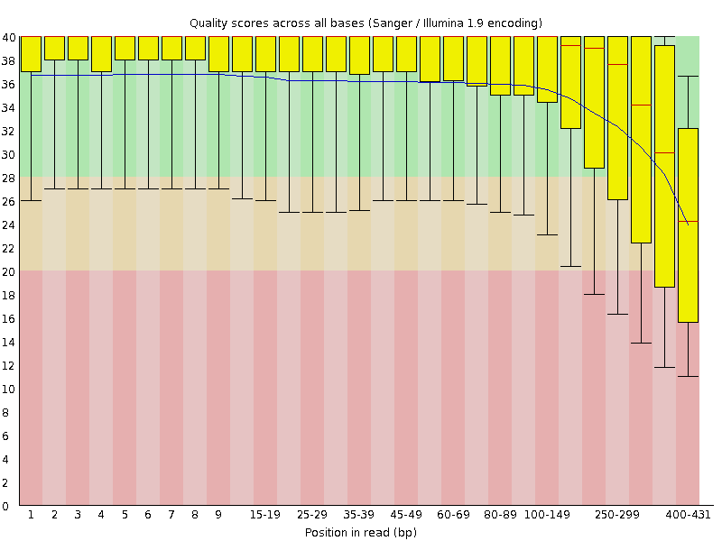
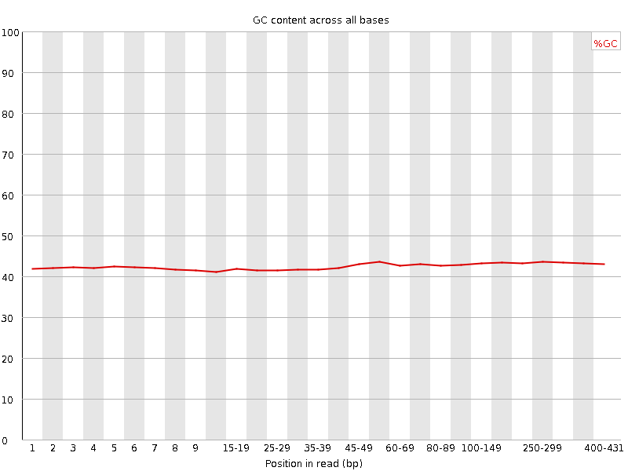
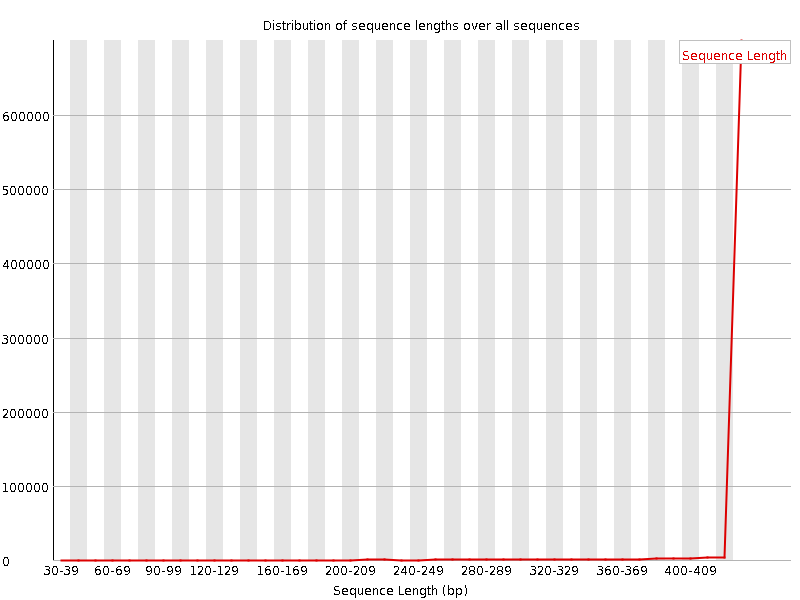
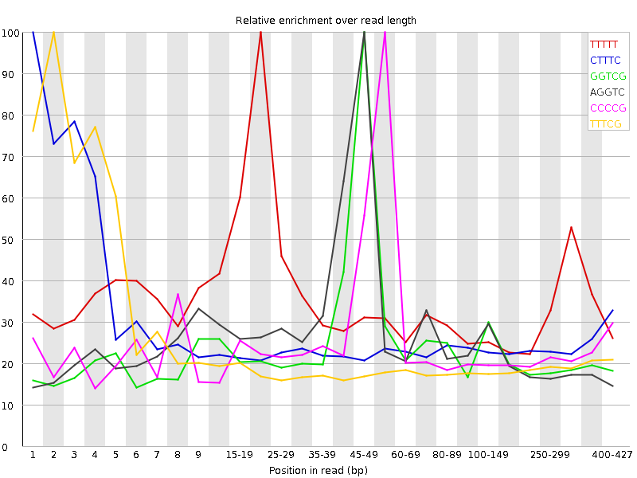

![[OK]](Icons/tick.png) Basic Statistics
Basic Statistics
| Measure | Value |
|---|---|
| Filename | PiuraChilensis_Coquimbo_trimmer_out.fastq |
| File type | Conventional base calls |
| Encoding | Sanger / Illumina 1.9 |
| Total Sequences | 758154 |
| Filtered Sequences | 0 |
| Sequence length | 36-431 |
| %GC | 43 |
![[WARN]](Icons/warning.png) Per base sequence quality
Per base sequence quality

Per sequence quality scores

Per base sequence content

Per base GC content

![[FAIL]](Icons/error.png) Per sequence GC content
Per sequence GC content

Per base N content

Sequence Length Distribution

Sequence Duplication Levels

Overrepresented sequences
| Sequence | Count | Percentage | Possible Source |
|---|---|---|---|
| CTTTCGTACTATTTCTCTGTTTTTTTAAAAGAAAAAATCTAAACTAGGTC | 2549 | 0.33621137658048367 | No Hit |
| TTTCGTACTATTTCTCTGTTTTTTTAAAAGAAAAAATCTAAACTAGGTCG | 1935 | 0.25522519171566727 | No Hit |
| CCTTTCGTACTATTTCTCTGTTTTTTTAAAAGAAAAAATCTAAACTAGGT | 1554 | 0.2049715493158382 | No Hit |
| TCCTTTCGTACTATTTCTCTGTTTTTTTAAAAGAAAAAATCTAAACTAGG | 1540 | 0.20312495878146128 | No Hit |
| TTCCTTTCGTACTATTTCTCTGTTTTTTTAAAAGAAAAAATCTAAACTAG | 1476 | 0.19468340205288107 | No Hit |
| TAATCATTACCTCGCGCTCCGAAAACCAACAAAATAGAACCGAGGTCCTA | 987 | 0.13018463267357291 | No Hit |
| ACTCACGTATATTTTTGATTGGTGAACAAACAAACTTCTCTATCTTCTAC | 979 | 0.12912943808250038 | No Hit |
| CACGTATATTTTTGATTGGTGAACAAACAAACTTCTCTATCTTCTACGAC | 944 | 0.12451296174655808 | No Hit |
| TTAAGTGCTATCGATAATGCTTGGATGAGTATCAAAAAATTAGGGAATTT | 921 | 0.12147927729722457 | No Hit |
| TTGTTTAATAAAAACTTTGTCTATTGTGGCTTATAATAGGTCTAGTCTGC | 903 | 0.1191050894673114 | No Hit |
| GTACTATTTCTCTGTTTTTTTAAAAGAAAAAATCTAAACTAGGTCGCCCC | 861 | 0.11356531786418063 | No Hit |
| AACTCACGTATATTTTTGATTGGTGAACAAACAAACTTCTCTATCTTCTA | 858 | 0.11316961989252844 | No Hit |
| CTCACGTATATTTTTGATTGGTGAACAAACAAACTTCTCTATCTTCTACG | 826 | 0.10894884152823833 | No Hit |
| TGTTAAGTGCTATCGATAATGCTTGGATGAGTATCAAAAAATTAGGGAAT | 783 | 0.1032771706012235 | No Hit |
| AAAATCTAAACTAGGTCGCCCCGTTCTAAACCCAACTCACGTATATTTTT | 771 | 0.1016943787146147 | No Hit |
Kmer Content

| Sequence | Count | Obs/Exp Overall | Obs/Exp Max | Max Obs/Exp Position |
|---|---|---|---|---|
| TTTTT | 1511905 | 2.669551 | 8.158263 | 20-24 |
| CTTTC | 470270 | 1.4407078 | 5.9173465 | 1 |
| GGTCG | 266635 | 1.3453084 | 6.1114 | 45-49 |
| AGGTC | 316990 | 1.224315 | 5.570803 | 45-49 |
| CCCCG | 175820 | 1.2098264 | 5.1289434 | 50-59 |
| TTTCG | 384780 | 1.158497 | 5.965849 | 2 |
| CGTAC | 291225 | 1.1445179 | 6.58576 | 5 |
| TTCGT | 367510 | 1.1065003 | 5.4523787 | 3 |
| GTCGC | 193515 | 0.9934948 | 5.3548956 | 45-49 |
| TCGTA | 296025 | 0.88321173 | 5.049443 | 4 |
| GTACT | 288820 | 0.8617151 | 5.2666264 | 6 |